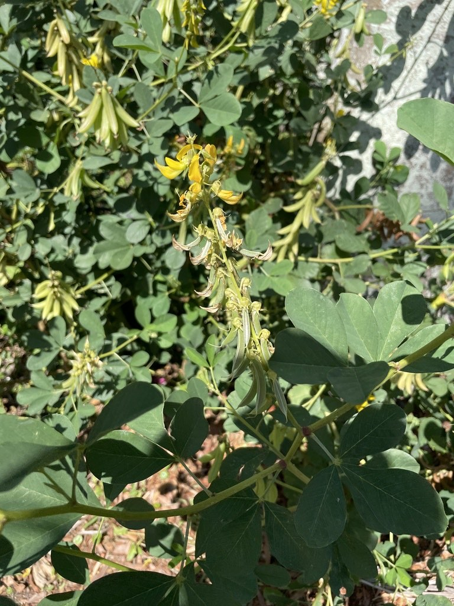

- The seeds rattle in the dry pods — hence the name. As the bean-like pods mature they inflate like small balloons and the loose seeds inside turn the plant into a natural maraca. A delightful sound for something so toxic.
- A persistent volunteer to the right of the office steps. It owns that spot and keeps coming back. One day something nicer will go there.
Non-native. Native to tropical Asia and Africa. Naturalized throughout Florida's disturbed areas. Member of Fabaceae — the legume family.
- Smooth Rattlebox is a non-native legume from the Old World tropics that has naturalized widely across Florida's disturbed ground, roadsides, and open fields. Like other rattleboxes, its dry seed pods inflate as they mature, and the loose seeds inside rattle when shaken - the source of the name and of the genus name Crotalaria, from the Greek for a rattle.
- The whole plant contains pyrrolizidine alkaloids, toxic to birds, livestock, and people if eaten, and responsible for poisoning in grazing animals. One insect turns that chemistry to its advantage: the Ornate Bella Moth (Utetheisa ornatrix), a showy day-flying moth whose caterpillars feed on Crotalaria, take up the alkaloids, and carry them into adulthood as a defense against predators.
- The caterpillars often destroy the seeds as they feed, a small check on a weedy plant.
- It is a FISC Category II invasive in Florida and spreads readily in the sandy, disturbed soils common around Manatee County.
The flowers are visited by bees and butterflies, but the plant's notable wildlife role is as a larval host for the Ornate Bella Moth (Utetheisa ornatrix), one of Florida's few showy day-flying moths. The caterpillars sequester the plant's toxic alkaloids for their own protection and often consume the developing seeds. The toxic foliage and seeds otherwise deter most browsing animals.
Yellow, pea-shaped, in upright clusters (racemes) at the stem tips, often streaked with fine reddish-brown lines.
Green ripening to brown, swollen and inflated; the dry seeds rattle inside. The ID confirmation.
Compound, each with three oval leaflets (trifoliate).
Erect, branching annual to short-lived perennial herb, woody at the base.
Upright stems of yellow pea flowers above three-part leaves, followed by inflated pods that rattle when shaken. Look for the brightly colored Bella Moth or its caterpillars on the plant.
Do not eat any part of this plant. It contains pyrrolizidine alkaloids that cause liver damage in people and animals if swallowed.
The same alkaloids cause progressive liver damage in dogs. Keep pets away from the pods and seeds.

- © abraham_a_005 (CC-BY-NC), via iNaturalist